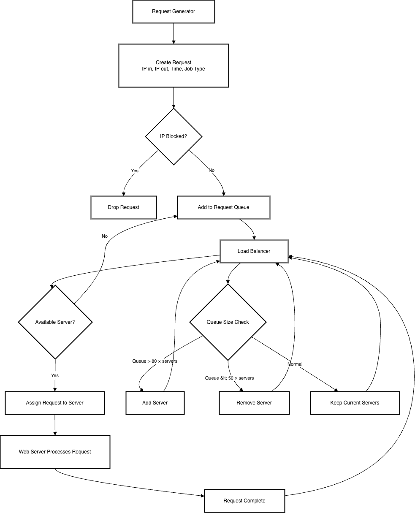

System Flow Diagram

System Description
This project simulates a company’s load balancing system. Requests are generated with random IP addresses, processing times, and job types. Each request enters a queue managed by the load balancer.
The load balancer assigns requests to available web servers. Each server processes one request at a time and then asks for another.
The system dynamically adjusts the number of servers to maintain an optimal queue size. If the queue grows too large, a server is added. If the queue becomes too small, a server is removed.
An IP blocker is also included to simulate a firewall, preventing requests from restricted IP ranges from entering the system.